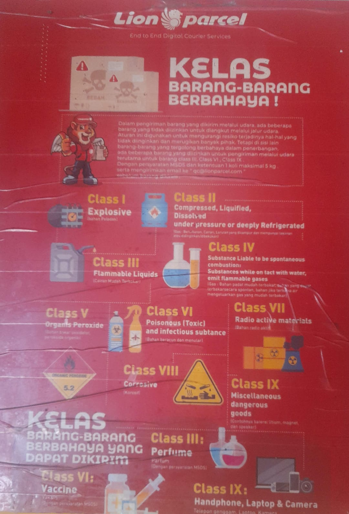

Barang-Barang yang Tidak Diizinkan Dikirim via Ekspedisi Udara

Mengirim paket menggunakan ekspedisi udara menjadi pilihan bagi banyak orang karena dapat membantu mempercepat distribusi barang antarkota maupun antarwilayah. Namun, tidak semua barang boleh dimasukkan ke dalam paket yang akan diangkut menggunakan pesawat.
Ada barang yang dilarang karena berpotensi menimbulkan kebakaran, ledakan, kebocoran, atau membahayakan keselamatan penerbangan. Ada juga barang yang hanya dapat dikirim dengan persyaratan khusus, dokumen tertentu, atau layanan yang memang menerima kategori tersebut.
Karena itu, sebelum mengirim paket melalui ekspedisi udara, pengirim perlu memahami jenis barang yang harus dihindari dan barang yang perlu dikonfirmasi terlebih dahulu. Berikut panduan praktisnya.
📦 Ragu Barang Anda Bisa Dikirim?
Sebelum mengemas paket, tanyakan terlebih dahulu ketentuan pengiriman berdasarkan jenis barang dan tujuan. Jangan mengirim barang berbahaya tanpa persetujuan serta prosedur yang sesuai.
💬 Chat WhatsApp 0851-8309-04861. Bahan Peledak dan Kembang Api
Bahan peledak termasuk kategori barang berbahaya yang memiliki risiko tinggi terhadap keselamatan penerbangan. Barang dalam kategori ini tidak boleh dimasukkan ke pengiriman paket biasa.
Contohnya meliputi:
- Kembang api dan petasan.
- Bahan peledak dan komponen peledak.
- Amunisi dan bahan piroteknik tertentu.
- Barang lain yang mengandung bahan peledak atau memiliki fungsi serupa.
Jangan mencoba menyamarkan isi paket atau menggunakan nama barang yang tidak sesuai. Jika suatu barang termasuk kategori berbahaya, pengiriman hanya boleh dilakukan apabila secara hukum diperbolehkan dan seluruh persyaratan khususnya dipenuhi oleh pihak yang berwenang.
2. Bahan Mudah Terbakar
Bahan mudah terbakar dapat memicu kebakaran apabila mengalami kebocoran, terkena sumber panas, atau berada dalam kondisi yang tidak sesuai. Sebagian bahan tersebut memiliki pembatasan ketat dalam pengangkutan udara.
Contoh barang yang perlu diwaspadai:
- Bensin dan bahan bakar sejenis.
- Minyak tanah dan cairan bahan bakar lainnya.
- Thinner dan pelarut cat tertentu.
- Cairan pemantik api.
- Cat atau bahan kimia yang memiliki sifat mudah terbakar.
Ketentuan setiap produk dapat berbeda berdasarkan komposisi dan klasifikasi bahayanya. Jangan menganggap suatu cairan aman hanya karena dikemas dalam botol kecil atau wadah tertutup.
3. Gas Bertekanan dan Aerosol
Gas bertekanan dan produk aerosol dapat memiliki risiko kebocoran, pelepasan gas, atau kebakaran. Karena itu, jenis produk ini harus diperiksa sebelum dimasukkan ke dalam paket udara.
Contoh yang perlu dikonfirmasi antara lain:
- Tabung gas dan isi ulang gas.
- Tabung gas untuk kompor portabel.
- Kaleng aerosol bertekanan.
- Cat semprot dan produk semprot tertentu.
- Alat pemadam api bertekanan.
Tidak semua produk semprot memiliki klasifikasi yang sama. Informasikan nama produk, kandungan, dan keterangan pada labelnya kepada petugas ekspedisi agar dapat diperiksa sesuai aturan yang berlaku.
4. Baterai Lithium, Power Bank, dan Baterai Lepas
Baterai lithium banyak ditemukan pada perangkat elektronik seperti telepon genggam, laptop, kamera, jam pintar, dan perangkat lainnya. Baterai jenis ini perlu mendapat perhatian khusus karena dapat mengalami panas berlebih atau kebakaran apabila rusak, mengalami hubungan arus pendek, atau ditangani secara tidak tepat.
Barang yang perlu dikonfirmasi sebelum dikirim antara lain:
- Power bank.
- Baterai lithium cadangan atau baterai lepas.
- Baterai laptop dan kamera.
- Perangkat elektronik dengan baterai lithium tertanam.
- Baterai yang rusak, menggembung, atau mengalami kebocoran.
Perlu diketahui, perangkat elektronik yang mengandung baterai tidak selalu otomatis dilarang. Penerimaannya bergantung pada jenis baterai, kapasitas, kondisi, cara pemasangan, kemasan, serta ketentuan maskapai dan penyedia jasa. Baterai rusak atau cacat dapat memiliki larangan yang lebih ketat.
Jangan mengirim power bank atau baterai cadangan sebelum memastikan bahwa layanan yang digunakan menerima barang tersebut dan memenuhi persyaratan pengangkutan udara.
5. Bahan Kimia Beracun dan Korosif
Sebagian bahan kimia dapat membahayakan manusia, merusak kemasan, atau menimbulkan reaksi berbahaya apabila tercampur dengan zat lain. Bahan beracun dan korosif karena itu termasuk kategori yang harus diperiksa secara ketat.
Contohnya dapat meliputi:
- Asam kuat dan cairan korosif tertentu.
- Bahan kimia laboratorium yang tergolong berbahaya.
- Pestisida dan racun tertentu.
- Cairan pembersih industri dengan kandungan berbahaya.
- Bahan kimia yang dapat bereaksi dengan air atau zat lain.
Nama dagang saja tidak selalu cukup untuk menentukan apakah suatu produk boleh dikirim. Informasi komposisi, label bahaya, dan lembar data keselamatan atau Safety Data Sheet (SDS), jika tersedia, dapat diperlukan untuk mengidentifikasi klasifikasinya.
6. Parfum, Alkohol, dan Produk Cair Tertentu
Parfum, produk beralkohol, cairan perawatan tubuh, dan kosmetik sering menjadi pertanyaan saat seseorang ingin mengirim barang kepada keluarga atau pelanggan. Sebagian produk dapat mengandung alkohol atau bahan lain yang memengaruhi klasifikasi keselamatannya.
Contoh produk yang sebaiknya diperiksa lebih dahulu:
- Parfum dan eau de parfum.
- Hand sanitizer berbasis alkohol.
- Alkohol dengan konsentrasi tertentu.
- Cat kuku dan cairan penghapus cat kuku.
- Produk kosmetik cair dengan bahan mudah terbakar.
Bukan berarti semua parfum atau kosmetik pasti dilarang. Keputusan bergantung pada komposisi produk, kemasan, klasifikasi barang, serta ketentuan layanan. Mintalah konfirmasi sebelum membawa produk tersebut ke agen.
7. Senjata dan Benda yang Dapat Membahayakan
Senjata, benda tajam tertentu, dan barang yang dirancang untuk melukai orang dapat dikenai larangan atau pembatasan berdasarkan hukum dan kebijakan penyedia jasa.
Contoh kategori yang perlu diperiksa secara khusus meliputi:
- Senjata api dan amunisi.
- Benda yang menyerupai atau berfungsi sebagai senjata.
- Perangkat kejut listrik tertentu.
- Benda tajam yang dibatasi oleh ketentuan pengiriman.
Aturan untuk setiap kategori tidak selalu sama. Jangan mengirim barang tersebut melalui paket biasa sebelum memperoleh kepastian bahwa pengirimannya diperbolehkan dan memenuhi ketentuan hukum.
8. Uang Tunai, Logam Mulia, dan Barang Bernilai Tinggi
Uang tunai, emas, perhiasan, logam mulia, dokumen bernilai, dan barang koleksi mahal dapat memiliki ketentuan penerimaan, perlindungan, atau klaim yang berbeda dari paket biasa.
Barang bernilai tinggi belum tentu termasuk barang berbahaya dalam penerbangan, tetapi belum tentu juga diterima oleh setiap layanan ekspedisi. Sebagian penyedia jasa membatasi jenis barang tersebut atau mensyaratkan prosedur dan layanan khusus.
Sebelum mengirim, tanyakan apakah barang diterima, apakah tersedia perlindungan yang sesuai, bagaimana ketentuan pertanggungjawabannya, dan dokumen apa yang dibutuhkan. Jangan mengirim uang atau barang berharga dengan asumsi bahwa semua paket otomatis mendapatkan perlindungan penuh.
9. Makanan, Produk Hewani, Tumbuhan, dan Obat-obatan
Makanan, produk hewani, tanaman, benih, obat-obatan, dan suplemen tidak selalu dilarang dalam seluruh jenis pengiriman. Namun, barang-barang tersebut dapat tunduk pada ketentuan tambahan, seperti izin, sertifikat, persyaratan suhu, masa simpan, atau pembatasan impor.
Beberapa contoh yang perlu dikonfirmasi terlebih dahulu:
- Makanan segar atau makanan yang mudah rusak.
- Daging, produk susu, dan produk hewani tertentu.
- Tanaman hidup, benih, dan bagian tumbuhan.
- Obat resep, obat tertentu, dan produk kesehatan.
- Suplemen atau produk yang memiliki bahan yang diatur.
Untuk pengiriman internasional, periksa pula peraturan negara tujuan. Barang yang dapat dikirim di dalam Indonesia belum tentu dapat masuk ke negara lain tanpa dokumen atau izin tertentu.
10. Mengapa Barang Terlarang Tidak Boleh Disamarkan?
Setiap pengirim bertanggung jawab memberikan informasi yang benar tentang isi paket. Menyembunyikan jenis barang, menggunakan deskripsi yang tidak sesuai, atau mengemas barang berbahaya seolah-olah barang biasa dapat membahayakan proses pengangkutan dan menimbulkan masalah bagi pengirim maupun penyedia jasa.
Risiko yang mungkin terjadi antara lain:
- Paket ditolak sebelum dikirim.
- Kiriman tertahan untuk pemeriksaan lebih lanjut.
- Paket dikembalikan sesuai ketentuan yang berlaku.
- Timbul biaya penanganan atau biaya lain jika berlaku.
- Konsekuensi hukum apabila terdapat pelanggaran peraturan.
Karena itu, sampaikan isi paket secara jujur dan jangan mencoba mengakali pemeriksaan keselamatan. Jika barang tidak dapat diterima melalui udara, tanyakan apakah ada alternatif pengiriman yang legal dan sesuai dengan klasifikasi barang tersebut.
11. Cara Memastikan Barang Aman Dikirim via Ekspedisi Udara
Sebelum menyerahkan paket, lakukan beberapa langkah sederhana berikut agar barang tidak ditolak karena persyaratan yang belum diketahui.
- Identifikasi isi paket secara lengkap, termasuk bahan atau komposisi jika relevan.
- Periksa label peringatan pada kemasan produk.
- Siapkan informasi berat, dimensi, dan jumlah barang.
- Tanyakan apakah barang diterima melalui layanan udara yang akan digunakan.
- Konfirmasikan persyaratan kemasan dan dokumen jika barang memiliki klasifikasi khusus.
- Pastikan barang dikemas sesuai instruksi dan tidak dicampur dengan barang yang tidak diperbolehkan.
- Simpan bukti transaksi dan informasi pengiriman.
Catatan penting bagi pengirim
Daftar dalam artikel ini merupakan panduan umum, bukan daftar larangan resmi yang berlaku untuk seluruh ekspedisi. Aturan dapat berbeda menurut maskapai, jenis pesawat, rute, layanan, klasifikasi barang, dan peraturan terbaru. Konfirmasikan ketentuan sebelum mengirim.
📍 Lokasi Lion Parcel Bandung POS101 Nanjungmekar
Jl. Raya Barat Cicalengka RT 1 RW 1, Nanjung Mekar, Rancaekek, Kabupaten Bandung, Jawa Barat.
💬 Konsultasikan Pengiriman Paket Anda
Masih ragu apakah barang Anda bisa dikirim melalui ekspedisi udara? Hubungi Lion Parcel Bandung POS101 untuk menanyakan ketentuan penerimaan barang dan layanan yang tersedia sebelum melakukan pengiriman.
📲 Chat WhatsApp POS101Kesimpulan
Barang yang tidak boleh dikirim atau memerlukan persyaratan khusus melalui ekspedisi udara antara lain bahan peledak, bahan mudah terbakar, gas bertekanan, bahan kimia berbahaya, serta sejumlah barang yang mengandung baterai atau memiliki pembatasan tertentu.
Sementara itu, barang seperti parfum, kosmetik, makanan, obat-obatan, dan perangkat elektronik perlu diperiksa berdasarkan karakteristik produk serta ketentuan layanan yang digunakan. Tidak semua barang dalam kategori tersebut otomatis dilarang, tetapi pengirim harus memastikan persyaratannya sebelum melakukan pengiriman.
Langkah terbaik adalah memberikan keterangan isi paket secara jujur, memeriksa aturan terbaru, dan meminta konfirmasi kepada penyedia jasa. Dengan begitu, pengiriman dapat dipersiapkan dengan lebih aman dan risiko penolakan paket dapat dikurangi.
Nama Agen: Lion Parcel Bandung POS101 Nanjungmekar Rancaekek
Jam Operasional: Senin–Minggu, 08.00–20.00 WIB
Alamat: Jl. Raya Barat Cicalengka RT 1 RW 1, Nanjung Mekar, Rancaekek, Kabupaten Bandung
WhatsApp: 0851-8309-0486